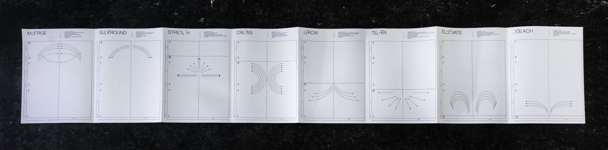
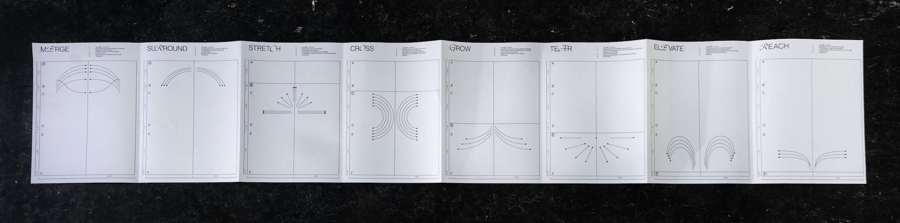
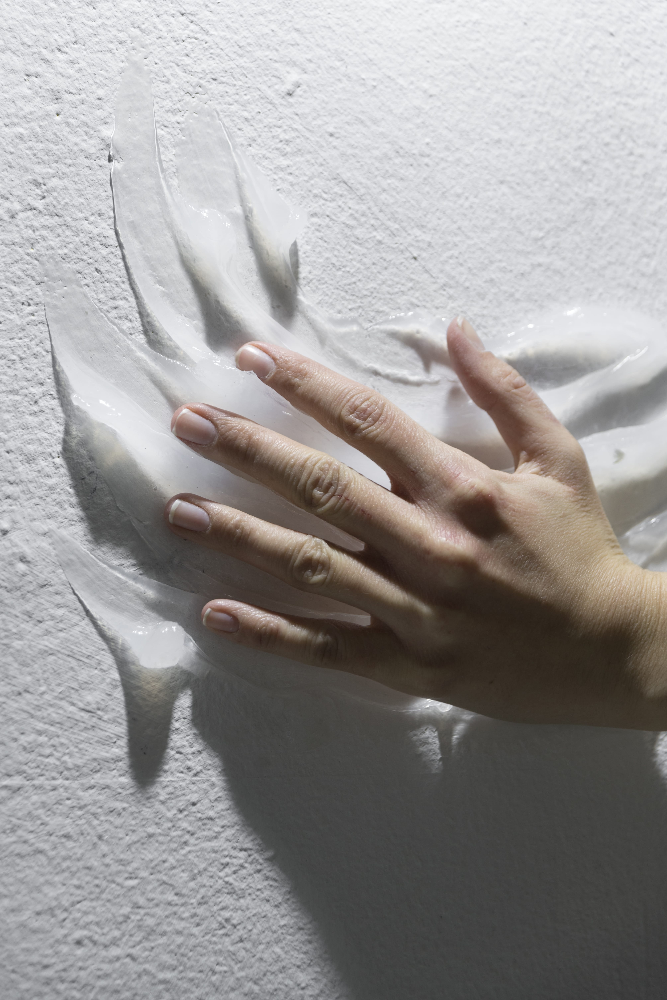
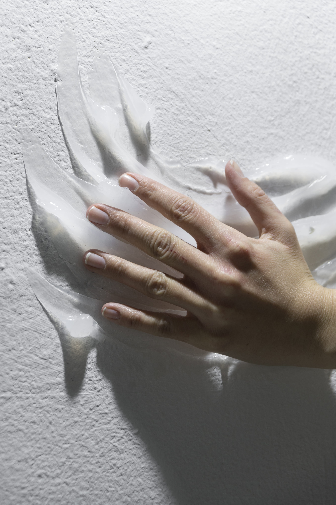
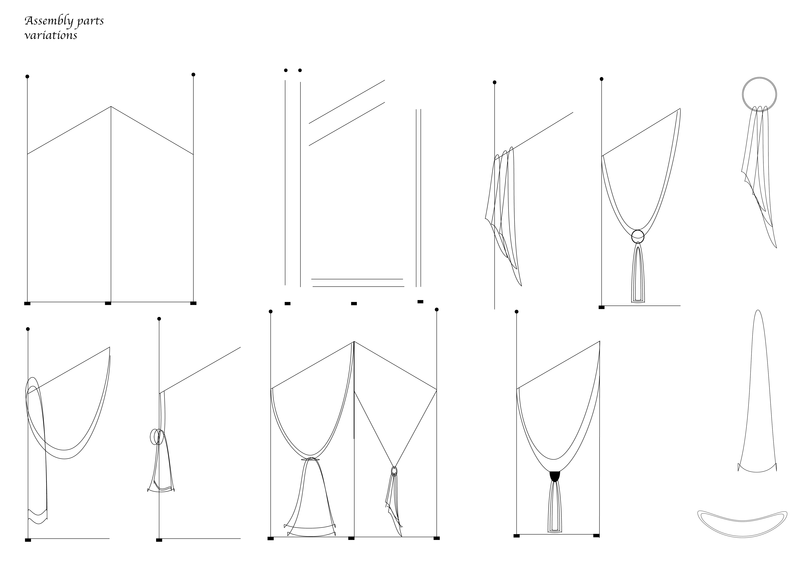
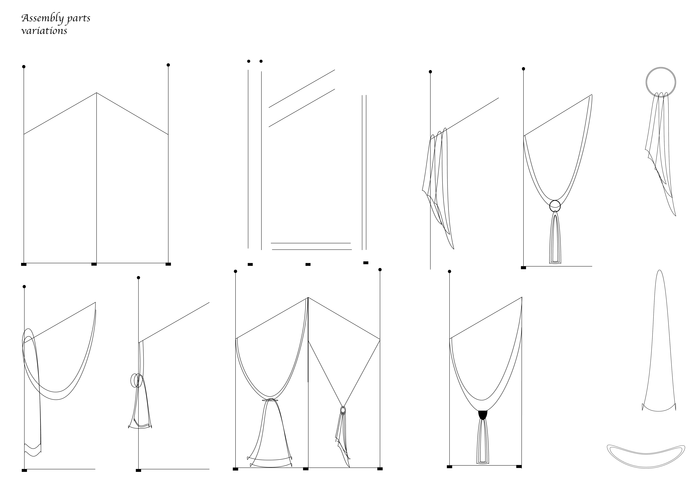
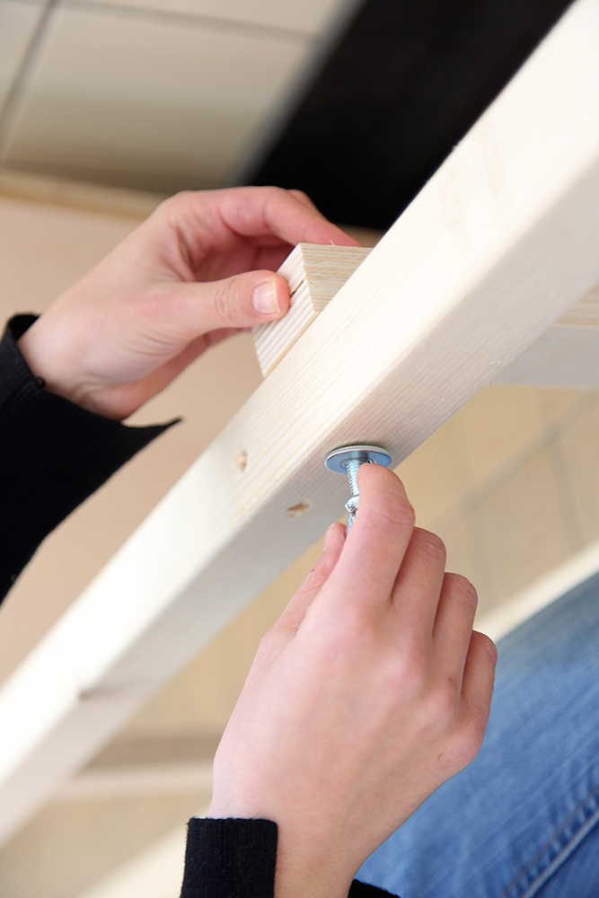
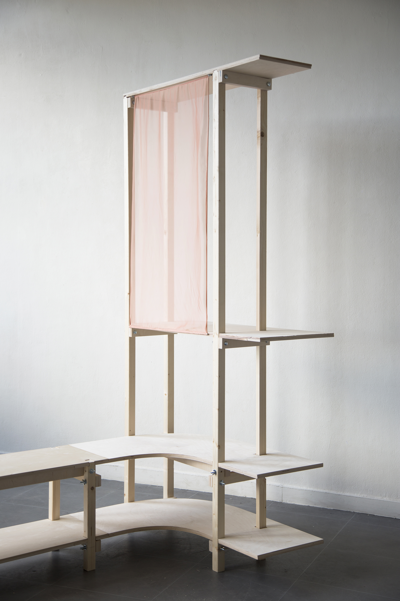
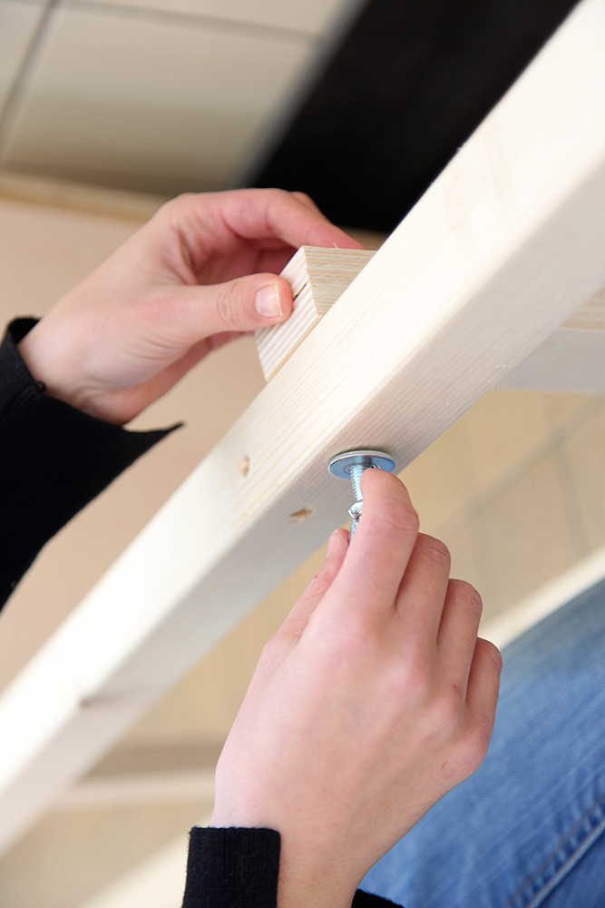
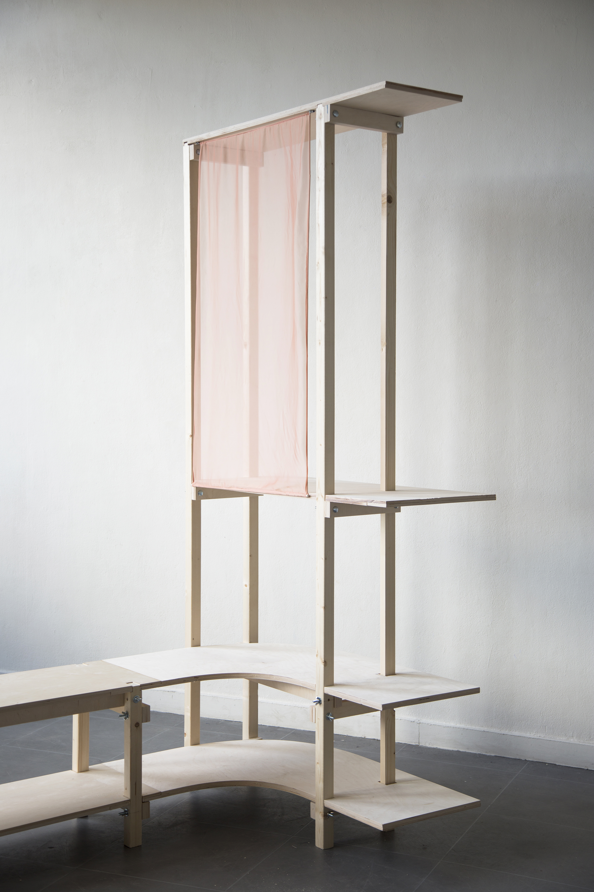

In the first of four site-specific installations as a result of the open call “Like the State, the Toilet is Never Neutral”, Petra Popangelova turns the attention to the invisible traces that exist in the toilet. By materialising them in organically shaped ornaments, she creates an archive of the effects of the public toilet’s multiple users as well as the activities that have occurred in it. The choice of material is not an end in itself but an integral part of the architecture of the toilet, the invisible agent, the unsung hero that holds everything together. Its ephemeral aesthetic qualities bring about a direct association to the invisible marks that we, as users, leave behind, thus layering the space with experiences and meanings that rid the public toilet of its neutral everyday function.
In architecture, the drive towards utilitarianism has made ornaments useless, obsolete objects and in contemporary times an object of kitsch. But beyond architecture’s obsession with utility and function, Petra’s work is “rethinking the physical connection between the human as an artisan and the building as an entity.” This commentary is not only on a conceptual but on a material level. Contrasting the aesthetic value of ornaments with the utilitarian quality of the material used for their creation makes the former an object of utility and grants the latter with an aesthetic quality that is usually neglected. Thus, form and function fuse and intertwine in such a way that is impossible to dissociate them from one another.
There is a certain notion of nobleness and romanticism in the production of unpractical and seemingly nonsensical objects. Perhaps it is rationality that makes us human, but it is benevolence that makes us humane. It is that human touch, metaphorical and physical, that elevates the public toilet from a strictly functional space to a place where stories unfold and intertwine, stories of violence and affection alike.
Curator: Vasil Vladimirov
Graphic Design: Yana Abrasheva
Photography: Mihail Novakov
The project is implemented with the support of the National Culture Fund and KO-OP Sofia.
 


 



 

 


